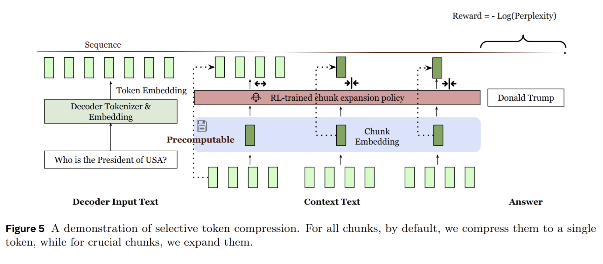

[Paper Summary] REFRAG: Rethinking RAG based Decoding
ArXiv | GitHub | Discussion | AlphaXiv

What is this paper about?
- An efficient decoding framework that optimizes Retrieval-Augmented Generation (RAG) by exploiting attention sparsity within long-context inputs.
- Utilizes pre-computed, compressed chunk embeddings as approximate representations, feeding these into the decoder to reduce input sequence length and attention computation complexity, which then scales quadratically with the number of chunks rather than tokens.
- Achieves substantial time-to-first-token (TTFT) acceleration (up to \(30.85x\)) and extends the effective context size of LLMs by \(16x\) without perplexity loss, supported by a reinforcement learning (RL) policy for selective chunk expansion.
How is this paper different from prior work?
- First to enable pre-computation of chunk embeddings and their use at arbitrary positions within the prompt, preserving the autoregressive property of the decoder and supporting diverse applications beyond prefix contexts (e.g., multi-turn RAG, summarization).
- Introduces a lightweight reinforcement learning (RL) policy for selective token compression, which adaptively determines when to use full chunk token input versus low-cost, approximate chunk embeddings at inference time, optimizing for both latency and performance.
- Unlike previous methods that either reduce KV cache memory or improve TTFT, it simultaneously achieves significant gains in both TTFT (up to 30.85x acceleration) and effective context window extension (16x), while maintaining accuracy.
What experiments were run to support the arguments in this paper?
Perplexity Evaluation: The effectiveness was rigorously validated through perplexity evaluations on long-context tasks using datasets like Slimpajama (Book, ArXiv domains), PG19, and Proof-pile, comparing various compression rates and against baselines like LLaMA-Full Context, CEPE, and REPLUG.
Latency and Throughput Benchmarking: Empirical measurements of time-to-first-token (TTFT), time-to-iterative-token (TTIT), and overall throughput were conducted to quantify the acceleration achieved by REFRAG (with and without caching) at different input lengths and compression rates (e.g., k=8, 16, 32), demonstrating substantial speedups over LLaMA and CEPE.
Downstream Application Performance: REFRAG’s performance was assessed on practical long-context applications, including Retrieval-Augmented Generation (RAG) using various QA datasets, multi-turn conversations (TopiOCQA, ORConvQA, QReCC), and long document summarization (Arxiv, Pubmed), comparing its accuracy and efficiency against fine-tuned LLaMA models and other state-of-the-art methods under both strong and weak retriever scenarios.
What are the shortcomings/limitations of this paper?
- Compression Rate Limits: The paper notes a practical limit to the compression rate (e.g., k=64 shows diminished performance), indicating that overly aggressive compression can significantly reduce model capability, suggesting a trade-off between compression and information retention.
- Encoder Generalizability: While varying encoder-decoder combinations were explored, the paper indicates that larger encoders (e.g., RoBERTa-Large vs. RoBERTa-Base) offer only modest improvements, and can even negatively impact performance with limited data, raising questions about optimal encoder scaling.
- RL Policy Training Cost: The selective compression policy relies on RL, which can be computationally intensive and complex to train, potentially posing a barrier to adoption or requiring significant resources to fine-tune for new applications or domains.
What is a reasonable next step to build upon this paper?
Hierarchical, Content-Aware Compression: Develop a multi-granular compression scheme that dynamically compresses sub-chunk units based on their contextual importance, moving beyond fixed-size chunking and potentially leveraging external knowledge graphs or semantic embeddings to inform compression decisions.
Adaptive Encoder-Decoder Co-design: Explore joint optimization of encoder and decoder architectures, focusing on lightweight, specialized encoders that can dynamically adjust their expressiveness based on context complexity, rather than simply scaling parameters, to maximize information retention at high compression rates.
Appendix
Retrieval-Augmented Generation (RAG): A system where a language model retrieves relevant information from external sources to improve its generation.
Key-Value (KV) Cache: Memory used in transformer models to store previously computed keys and values, accelerating decoding but increasing memory usage with context length.
Time-to-First-Token (TTFT): The latency experienced from the input prompt being received to the first output token being generated.
Time-to-Iterative-Token (TTIT): The latency for generating each subsequent token after the first token.
Chunk Embedding: A compact vector representation of a segment (chunk) of input text, used to reduce the effective input length for the decoder.
Attention Sparsity: A property of attention mechanisms where most interactions between tokens or chunks are zero or negligible, allowing for computational optimizations.
Perplexity: A measure of how well a probability model predicts a sample; lower perplexity indicates better performance in language models.
Continual Pre-training (CPT): The process of further training a pre-trained language model on new data or tasks to adapt it to specific requirements.
Reinforcement Learning (RL) Policy: An algorithm trained to make sequential decisions, in this context, to selectively determine which context chunks to expand.
Autoregressive Nature: The property of a model where each output token is generated based on the preceding tokens in the sequence.